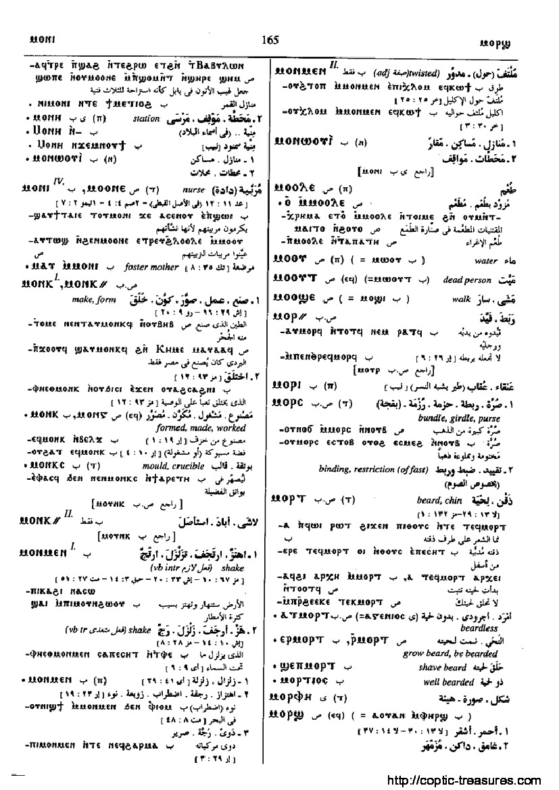

(S) ⲙⲟⲟⲛⲉ (ⲧ)
(A) ⲙⲁⲁⲛⲉ (ⲧ)
(B) ⲙⲟⲛⲓ (ⲧ)
(F) ⲙⲁⲁⲛⲓ (ⲧ)
(
noun female
)
Crum:
174a
nurse
[
τροφοσ
,
τιθηνοσ
]
as adj
, foster-mother
&c
[
τροφοσ
]
1070-1-1
(S) ⲙⲟⲟⲛⲉ
(A) ⲙⲁⲁⲛⲉ
(B) ⲙⲟⲛⲓ
(F) ⲙⲁⲁⲛⲓ
174
Dawoud:
164b-165a
164

165
Home
prev
Key:
1070
next
Contact